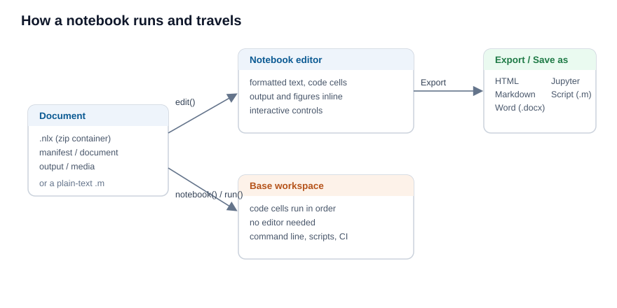

A Notebook document is more than an editor view. The same file runs from the command line, saves and travels as one portable file, and converts to and from other formats.

Run without the editor
notebook(filename) runs a document without opening it: it reads the code of each code cell, in order, and evaluates it against the base workspace, exactly as the editor would. run(filename) on a .nlx file does the same. This is how a document runs from nelson-cli or in a batch job, where no editor is available. The text blocks, headings, equations and controls are skipped; only the code cells run.
The .nlx container
The native .nlx file is a zip container. It keeps the source (document.json), the saved output (output.json) and the figures (media/) apart, so the source stays small and reads cleanly, while the saved figures travel with it. The nlx reference page describes every entry.
The plain-text .m form
A Notebook can also be saved as a plain-text .m script, where each block is written under a %% [kind] marker (for example %% [code] or %% [text]). This file opens in any text editor and runs as an ordinary script. An .m file with no such marker is treated as one single code cell and run whole.
Export and import
From the Export menu a document is written as HTML, Markdown, Word (.docx) or a Jupyter notebook (.ipynb), and Save as Script writes the plain-text .m form. Open reads a .nlx document, a plain .m script or a .ipynb notebook back into the editor.
Check that a document runs top to bottom
A document is reliable when it runs from an empty workspace, in order, with no error. Because the cells share the base workspace, a variable left over from an earlier session can hide a missing step. To check, run the document in a fresh session, for example with nelson-cli and notebook(filename); if a cell fails, the run stops with the error. This same check fits a continuous-integration job.
The example below builds a minimal .nlx document and runs it without the editor.
% write the source of a one-cell document
d = [tempdir(), createGUID()];
mkdir(d);
fw = fopen([d, '/document.json'], 'wt');
fwrite(fw, '{"blocks":[{"type":"codecell","props":{"code":"answer = 6 * 7;"}}]}');
fclose(fw);
fw = fopen([d, '/manifest.json'], 'wt');
fwrite(fw, '{"format":"nelson-notebook","version":1}');
fclose(fw);
% pack it as a .nlx container
nlx = [tempdir(), createGUID(), '.nlx'];
odir = pwd();
cd(d);
zip(nlx, '*.json');
cd(odir);
% run it: the code cell evaluates against the base workspace
notebook(nlx);
answer| Version | Description |
|---|---|
| 2.0.0 | initial version |